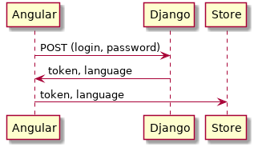

Authorization¶
Angular¶
Authorization form auth/login/login.component.ts
login(){
this.login_service.login({'username': this.user.username, 'password': this.user.password});
}
Service login_service.
Get token, language from the server by POST request and save it into the local storage.
Dispatch action LogIn into storage and navigate to /dashboard url.
public login(user) {
this.token_service.removeToken();
user.socket_id = this.token_service.getSid();
this.http.post(`${this.app_config.APIurl}/api-token-auth/`,user).subscribe(
(data: any) => {
this.token_service.setToken(data['token'])
this.token_service.setLanguage(data['language'])
this.session_store.dispatch(new sessionActions.LogIn(data));
this.router.navigate(['/dashboard'])
},
err => {
this._login_emmiter.next({status: 1, message: 'Invalid login or password'});
this.errors = err['error'];
}
);
}

Refreshing or first loading page¶
Initialization service.
public init() {
this.http.get(`${this.app_config.APIurl}/init`).subscribe(
(data: any) => {
/// set session user
this.session_store.dispatch(new sessionActions.Init(data));
// set online users
this.user_state.dispatch(new UpdateUsers(data.users_online));
},
err => {
this.token_service.removeToken();
}
);
}
Django view.¶
Initialization request. {
‘status’: 0, ‘message’: ‘Ok’, ‘token’: token.key, ‘languges’: lng, ‘user’: user_serializer(request.user.userprofile), ‘users_online’: uo
}